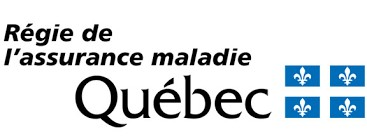

La Commission des normes, de l'équité, de la santé et de la sécurité au travail (CNESST) couvre les consultations avec un acupuncteur dans un contexte d'accident de travail ou de lésion professionnelle. Une évaluation et prescription médicale est nécessaire pour être admissible.
La Société de l'assurance automobile du Québec couvre partiellement les consultations avec un acupuncteur dans un contexte de problématiques de santé causées par un accident de la route. Une prescription médicale est également nécessaire pour y être admissible. Le patient peut devoir payer la différence entre les coûts de la consultation et les frais remboursés par la SAAQ. La différence des frais peut être soumise à l'assureur privé du patient et/ou être considérée comme des frais médicaux aux fins de l'impôt provincial et fédéral.
Les traitements ne sont pas défrayés par la Régie de l'assurance-maladie du Québec. Cependant, plusieurs compagnies d'assurances remboursent une partie du coût des traitements. Informez-vous auprès de votre assureur et insistez pour qu'il ajoute l'acupuncture à votre police d'assurance.
